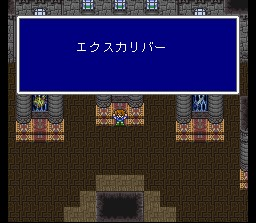
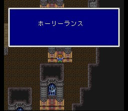

봉인성 쿠자
쿠자성에 와보면 바람의 신전에 있던 신관과 학자들이 모두 여기로 옮겨와 있습니다. 회복의 물도 이리로 옮겨 와 있고.. 학자 한 명에게 봉인의 책의 내용을 확인할 수 있습니다.
새로운 석판을 입수했다면 성 안으로 들어가서 필요한 무기 3개의 봉인을 풀어 가집시다. 모두 최강급의 강력한 무기들입니다. 쓸 수 있는 주 직종이 모두 다르니, 어떤 직업으로 당분간 나갈 것인지를 생각해서 결정합시다.
성 안에서는 엑스데스소울이라는 놈이 나타납니다. 말그대로 엑스데스와 똑같이 생겼는데 혼령같은 분위기가.. 홀리를 얻으셨다면 성속성에 약하니 참고하시고, 그냥 싸워도 웬만히 진행해셨다면 껌일 겁니다. 단 즉사공격을 자주 쓰니 주의하세요.